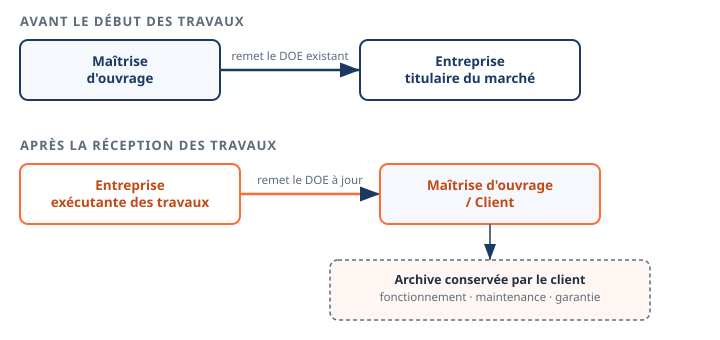
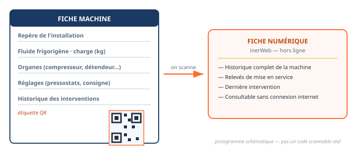

Thème / DomaineLe dossier technique · la fiche machine
Module THÉORIE T1 · 1 hLe dossier technique et la fiche machine (QR)
SéquenceS15 · sem. 19
Nom________________
Prénom________________
Date________________
Positionnement01234
Tâches
T1 Renseigner et transmettre des documents de suivi
Savoirs
S1.2 Pièces et autorisations administratives S2.1 Outils, normes et représentation
Savoir-être
Rigueur du classement · honnêteté (jamais de valeur inventée sur un document officiel)
Compétence
Découverte → ConfortementC1.1 Compléter, transmettre module de renforcement, préparatoire au module F6
Accroche
Ordre d'intervention n° S15-T1-01 : le climatiseur split que vous venez de poser et de mettre en service
(module A6) est terminé. Le client va venir réceptionner l'installation. Votre professeur vous demande de
préparer les documents à lui remettre.
Question de départ — Dans 3 ans, si la machine tombe en panne et qu'un
autre technicien intervient (pas vous), comment saura-t-il quel fluide elle contient, quelle est sa charge, et
quels réglages ont été faits le jour de la mise en service ?
DÉCOUVERTE — le Dossier des Ouvrages Exécutés (DOE)
Observez le schéma ci-dessous : il montre qui remet le DOE à qui, et à
quel moment du chantier.

Le circuit du DOE : avant le chantier (en haut) et après la réception des travaux (en bas).
Observation 1 — D'après le schéma, avant le début des travaux, qui
remet le DOE existant, et à qui ?
Observation 2 — D'après le schéma, après la réception des travaux,
qui remet le DOE à jour, et à qui ? Que devient ce dossier ensuite ?
Ce qu'est le DOE
Le Dossier des Ouvrages Exécutés est un document obligatoire
qui retrace toute la traçabilité technique et historique d'un chantier. Une fois les travaux reçus, il
est conservé par le client (la maîtrise d'ouvrage) pour le fonctionnement, la maintenance
et la garantie de l'installation. C'est une archive : sans lui, un futur intervenant repart de
zéro sur une machine qu'il ne connaît pas.
Question — À votre avis, qui a besoin de consulter le DOE plusieurs
années après la mise en service, et pourquoi ?
Le DOE, c'est le dossier complet du chantier. Mais sur le terrain, un technicien
n'a pas toujours ce dossier entier avec lui. Il existe un document plus court, collé sur la machine
elle-même : la fiche machine.

La fiche machine (à gauche) porte un QR. En le scannant, on accède à la fiche numérique de la machine (à droite).
Observation 3 — D'après le schéma, quelles sont les 5 informations
qui figurent sur la fiche machine papier ? Recopiez la liste.
Observation 4 — Que se passe-t-il quand on scanne le QR de la
fiche machine ? Le schéma précise une particularité importante de cette fiche numérique : laquelle ?
Ce qu'est la fiche machine (avec QR hors-ligne inerWeb)
La fiche machine résume les informations essentielles d'une
installation : son repère, son fluide et sa charge, ses organes (compresseur, détendeur,
vannes…), ses réglages (pressostats, consigne). Elle porte une étiquette QR : en la scannant avec
un smartphone, on ouvre la fiche numérique de cette machine précise, dans l'outil inerWeb.
Particularité importante : cette fiche numérique reste
consultable même sans connexion internet (« hors-ligne »). Un technicien peut donc la lire dans une
chaufferie ou un local technique où le réseau ne passe pas.
Question — Quelle est la différence entre le DOE (feuille 1) et la fiche
machine (cette feuille) ? Lequel des deux tiendrait dans votre poche sur le chantier ?
Pour chaque situation, cochez le document le plus adapté.
Situation
DOE
Fiche machine
Un technicien seul, sur le chantier, veut connaître en 30 secondes le fluide et la charge de la machine.
☐
☐
Le client archive tous les plans, notices et PV d'essais du chantier pendant 20 ans.
☐
☐
On veut scanner un code directement collé sur la machine.
☐
☐
Un bureau d'études a besoin de la traçabilité complète de tous les travaux réalisés.
☐
☐
Exercice 2 — classer les informations
Voici des informations trouvées lors de la mise en service du climatiseur split
(module A6). Rangez chacune dans la bonne catégorie de la fiche machine.
Complétez cette fiche avec vos propres mots : elle vous servira de repère au
module F6, où vous constituerez le dossier technique de votre propre machine.
1. Le DOE — je retiens :
2. La fiche machine et le QR — je retiens :
3. La règle à ne jamais oublier :
Une valeur absente de la plaque signalétique s'écrit
« », jamais inventée.
Auto-positionnement
Échelle FrigorX : 0 Non évalué · 1 Non acquis · 2 En cours
d'acquisition · 3 Acquis · 4 Parfaitement maîtrisé.
Savoirs
Ancrage
0 Non évalué
1 Non acquis
2 En cours
3-4 Acquis / maîtrisé
S1.2 · S2.1 Le DOE et la fiche machine QR Découverte → Confortement
module T1
Compétence non observée ce jour.
Ne sait pas dire à quoi sert un DOE ni ce que contient une fiche machine.
Distingue DOE et fiche machine avec de l'aide.
Distingue seul DOE et fiche machine, cite les 5 catégories d'une fiche machine et la règle de la valeur non inventée.
Ce module de renforcement n'est pas remonté
en compétence sur École Directe : il prépare le module F6, où vous constituerez réellement le dossier
technique de votre machine (C1.1 en Confortement → Évaluation).
D'après : Dossier des
Ouvrages Exécutés.docx, fiche d'intervention clim froid.docx, rapport-dintervention.docx (F. Henninot).